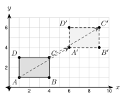
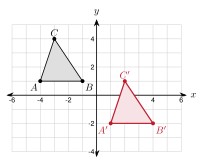
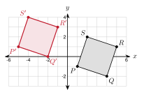
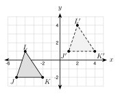
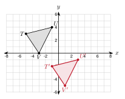
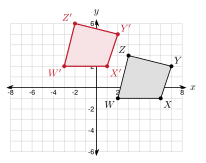

3.1 Translations
- Name the preimage and image of a transformation
- Write and use a translation rule like (x, y) → (x + 3, y − 2)
- Graph the image of a figure after a translation
- Use distance and slope to show what a translation keeps the same
Warm-Up
1. AB = 5
2. 34
3. a = 6
3.1.1Moving a Figure
- The starting figure is the preimage. The new figure is the image.
- The image of point A is A′. Read it as "A prime".
- A translation slides every point the same distance in the same direction.

The desk ABCD slides to A′B′C′D′ (see the figure).
a. Name the image of C. C′
b. A is at (1, 1) and A′ is at (6, 4). How far did A move? 5 right and 3 up
c. D is at (1, 3). Where is D′? (6, 6). Every point moves the same way.
a. Name the preimage of B′.
B
b. C is at (4, 3). Where is C′?
(9, 6)
3.1.2Translation Rules
- The rule (x, y) → (x + a, y + b) slides a figure.
- If a is positive, move right. If a is negative, move left.
- If b is positive, move up. If b is negative, move down.
| Move | Rule |
|---|---|
| 3 right | (x + 3, y) |
| 5 down | (x, y − 5) |
| 2 left and 6 up | (x − 2, y + 6) |
| 7 right and 1 down | (x + 7, y − 1) |
Apply (x, y) → (x − 3, y + 5) to P(2, −4).
x: 2 − 3 = −1
y: −4 + 5 = 1
P′ = (−1, 1)
A(−2, 3) moves to A′(4, −1). Write the rule.
Change in x: 4 − (−2) = 6
Change in y: −1 − 3 = −4
Rule: (x, y) → (x + 6, y − 4)
In words: 6 right and 4 down.
a. Apply (x, y) → (x + 7, y − 2) to Q(−5, −3).
Q′ = (2, −5)
b. B(1, −6) moves to B′(−3, 0). Write the rule and say it in words.
−3 − 1 = −4 and 0 − (−6) = 6. Rule: (x − 4, y + 6). 4 left and 6 up.
3.1.3Graphing the Image
- Step 1: Apply the rule to every vertex.
- Step 2: Plot the new points and label them A′, B′, C′.
- Step 3: Connect them in the same order as the preimage.

Graph the image of △ ABC with A(−4, 1), B(−1, 1), C(−3, 4) under (x, y) → (x + 5, y − 3).
A′ = (−4 + 5, 1 − 3) = (1, −2)
B′ = (−1 + 5, 1 − 3) = (4, −2)
C′ = (−3 + 5, 4 − 3) = (2, 1)

Graph the image of PQRS with P(1, −1), Q(4, −2), R(5, 1), S(2, 2) under (x, y) → (x − 6, y + 2).
P′ = (−5, 1), Q′ = (−2, 0)
R′ = (−1, 3), S′ = (−4, 4)
J′(1, 2), K′(4, 1), L′(3, 5)

3.1.4What Stays the Same
- A translation keeps every side length and every angle the same.
- Each side is parallel to its image. (They have the same slope.)
- A transformation that keeps lengths and angles is a rigid motion. A translation is a rigid motion.
In the first triangle example, A(−4, 1) and C(−3, 4) move to A′(1, −2) and C′(2, 1). Compare AC and A'C'.
Length of AC: 12 + 32 = 10
Length of A'C': 12 + 32 = 10
Slope of AC: 4 − 1−3 − (−4) = 3
Slope of A'C': 1 − (−2)2 − 1 = 3
The lengths are equal and the slopes are equal. So AC ≅ A'C' and AC ∥ A'C'.
XY = 36 + 64 = 10 and X′Y′ = 36 + 64 = 10. Both slopes are 86 = 43.
1. The starting figure is the preimage. The new figure is the image.
2. The rule (x + 3, y − 2) moves a figure 3 right and 2 down.
3. To graph an image, move each vertex and connect them in order.
4. A translation is a rigid motion. Each side is parallel to its image.
Practice
Use the figure for problems 1 to 4.

1. Name the image of K.
K′
2. Name the preimage of L′.
L
3. How far does every point move?
6 right and 3 up
4. Write the translation rule.
(x, y) → (x + 6, y + 3)
Apply the rule to the point.
5. (x, y) → (x + 4, y + 1) to (2, 3). (6, 4)
6. (x, y) → (x − 5, y + 0) to (1, −2). (−4, −2)
7. (x, y) → (x + 0, y − 6) to (−3, 4). (−3, −2)
8. (x, y) → (x − 2, y − 7) to (−1, −1). (−3, −8)
9. (x, y) → (x + 9, y − 4) to (−6, 0). (3, −4)
10. (x, y) → (x − 3, y + 8) to (4, −8). (1, 0)
Write the rule that moves A to A′. Then say it in words.
11. A(2, 5) → A′(7, 3) (x, y) → (x + 5, y − 2); 5 right and 2 down
12. A(−4, −1) → A′(−1, −6) (x, y) → (x + 3, y − 5); 3 right and 5 down
13. A(0, 6) → A′(−8, 2) (x, y) → (x − 8, y − 4); 8 left and 4 down
14. A(3, −3) → A′(3, 4) (x, y) → (x + 0, y + 7); 7 up
Graph the image. Give its coordinates.

15. Use (x, y) → (x + 4, y − 5) on △ TUV.
T′(−1, −2), U′(3, −1), V′(1, −5)
Graph the image. Give its coordinates.

16. Use (x, y) → (x − 5, y + 3) on WXYZ.
W′(−3, 2), X′(1, 2), Y′(2, 5), Z′(−2, 6)
Graph the image on your own grid.
17. Triangle MNO has M(1, −4), N(5, −3), O(2, −1). Use (x, y) → (x − 3, y + 6). Give the image coordinates.
M′(−2, 2), N′(2, 3), O′(−1, 5)
Check with distance and slope.
18. A(1, 2) and B(4, 6) move to A′(6, 0) and B′(9, 4). Show AB = A′B′ and that the slopes are equal.
AB = 9 + 16 = 5 and A′B′ = 9 + 16 = 5. Both slopes are 43.
19. A translation maps △ XYZ to △ X′Y′Z′. XY = 13 and m∠Y = 72°. Find X′Y′ and m∠Y′.
X′Y′ = 13 and m∠Y′ = 72°. A translation keeps lengths and angles.
20. Amira says the triangle with (0, 0), (4, 0), (0, 3) was translated to the triangle with (5, 1), (9, 1), (5, 5) because it looks the same. Is she right? Use lengths to decide.
No. The left side of the first triangle is 3 long. The left side of the second is 4 long. A translation keeps lengths, so this is not a translation.
Solve for the unknown.
21. The point (2k, k + 1) is moved by (x, y) → (x + 3, y − 2) to (11, 3). Find k.
2k + 3 = 11, so k = 4. Check: 4 + 1 − 2 = 3.
22. The image of P(x, 3) under (x, y) → (x − 5, y + 2) is P′(4, 5). Find x.
x − 5 = 4, so x = 9. Check: 3 + 2 = 5.
Real problems.
23. On a floor plan, each unit is 1 foot. A table has corners (2, 1), (6, 1), (6, 4), (2, 4). It moves 7 feet right and 3 feet up. Give the new corners and the area before and after.
(9, 4), (13, 4), (13, 7), (9, 7). Area: 4 · 3 = 12 square feet before and after.
24. A game character is at (3, 3). Each move uses (x, y) → (x + 2, y + 1). Where is the character after 4 moves?
Each move adds 2 to x and 1 to y. After 4 moves: (3 + 8, 3 + 4) = (11, 7).
25. Hnin moves a game piece with (x, y) → (x + 2, y − 1) three times in a row. Write one rule for all three moves.
(x + 6, y − 3)
Find the mistake.
26. Diego applies (x, y) → (x − 4, y + 1) to (3, −2) and gets (7, −1). What did he do wrong? What is the correct image?
He added 4 to x. The rule says to subtract 4: 3 − 4 = −1. The image is (−1, −1).
Test Practice
A. (3, −3) ← correct
B. (−9, 13)
C. (3, 13)
D. (−9, −3)
A. W′X′ = 8 cm and m∠X′ = 105° ← correct
B. W′X′ > 8 cm and m∠X′ = 105°
C. W′X′ = 8 cm and m∠X′ = 75°
D. W′X′ = 8 cm and m∠X′ cannot be found
Challenge
The rule is (x − 3, y + 4). So m = −3 − 3 = −6 and k + 4 = 1, so k = −3.